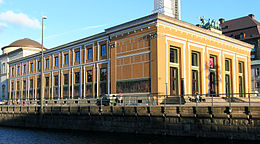
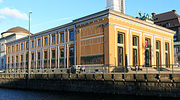

Cosa vedere a Copenaghen (di Nadia Beggio e Lucia Cavaliere)
CARLSBERG GLYPTOTEK

Il museo è stato creato da Carl Jacobsen (1842-1914) figlio del fondatore della fabbrica di birra Carlsberg e raccoglie più di 10.000 opere d’arte tra sculture e quadri. Le sezioni principali del museo sono due: la prima dedicata alle antiche civiltà mediterranee e la seconda all’arte moderna francese e danese. Una curiosità? Nelle decorazioni della Glyptoteca si vedono alcune svastiche, soprattutto nel soffitto. Nulla a che vedere con il nazismo.
IL
MUSEO THORVALDSEN


Bertel Thorvaldsen fu uno scultore danese, esponente del Neoclassicismo. Nacque il 19 novembre 1770. Come luogo di nascita alcune fonti citano Copenaghen, altre indicano una nave in viaggio tra l'Islanda e la Danimarca, altre ancora ritengono che fosse nato in suolo islandese. Spesso la sua Arte è paragonata a quella di Canova, tuttavia Thorvaldsen si dedica soprattutto alla mitologia greca.
Le pose ed espressioni delle sue sculture sono molto più rigide e formali di quelle di Canova. Due anni dopo, durante uno spettacolo teatrale ebbe un malore e morì, lasciando gran parte dei sui averi alla costruzione di un museo a Copenaghen che potesse mettere in mostra le sue opere.